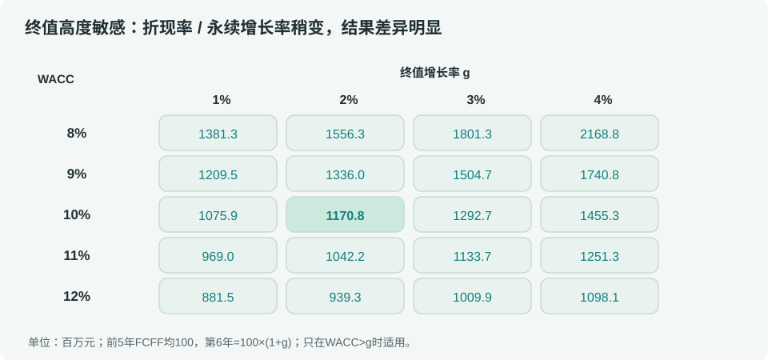

CHAPTER 08 · FINANCIAL VALUATION
DCF绝对估值：现金流、资本成本与终值
从税后经营利润推导FCFF，再用对应WACC折现；解释为什么终值和资本结构会显著改变每股参考价值。
利润很高，为什么企业仍可能没有投资价值？
公司公布利润并不意味着现金已经收回。即使经营利润增加，如果维持设备、建设新产能和增加库存需要更多资金，能分配给投资者的现金仍可能很少。绝对估值尝试把未来可获得的现金流折回今天，而不是只把报告利润乘以一个倍数。
DCF（折现现金流）模型有四个关键问题：谁可以拿到现金流、何时拿到、现金流承担何种风险，以及增长所需的再投资从哪里来。模型的精度来自假设可验证性，而非多保留几位小数。
从会计利润走向 FCFF：扣掉再投资
FCFF（企业自由现金流）是可供债权人与股东等所有资本提供者的自由现金流。经典简化口径是税后营业利润加折旧摊销，再减资本开支和非现金营运资本增加。这里的税后营业利润是假设适用营业税率下的NOPAT，不是直接把净利润当EBIT。

例如税后营业利润120、折旧摊销30、资本开支35、营运资本增加15，FCFF=100百万元。若 ΔNWC 为负，营运资本释放会增加当期FCFF，但不能据此认定这种释放可持续。
FCFF与FCFE不能混用：一条对应企业，一条对应股权
FCFF仍未支付对债权人的资本报酬，所以用企业加权平均资本成本WACC折现，得到经营企业价值。FCFE反映股权投资者的剩余现金流，需考虑净举债，并用权益资本成本折现得到股权价值。将FCFF错误地用权益成本折现，再扣一次债务，容易造成系统性错误。
| 模型 | 现金流对应的权利 | 贴现率 | 输出 |
|---|---|---|---|
| FCFF DCF | 股权与债权合计资本 | WACC | 经营企业价值 EV |
| FCFE DCF | 普通股权投资者 | 权益资本成本 Ke | 股权价值 |
| 股利折现 DDM | 预计向股东分配的股利 | Ke | 股权价值 |
企业价值转成股权价值时，通常还要加非经营现金、减有息债务，并按实际情况处理少数股东权益、优先股和非经营资产；不能把所有账面现金都假定为可自由转给新股东。
WACC：为什么权重和贴现率口径必须匹配
在简化的股权＋有息债务资本结构中，WACC以股权与债务的市场价值权重组合权益要求回报与税后债务成本。理论上债务利息具有抵税效应，但在亏损、税盾受限和复杂融资情形中不能机械使用同一个税率。
例如权益占70%、Ke=12%、债务成本6%、税率25%，WACC=0.7×12%＋0.3×6%×(1−25%)＝9.75%。这只是构造情景，不能拿某行业平均WACC无调整地套到所有企业。
完整五年 DCF：从 FCFF 到每股价值
构造一家公司：未来第1至第5年每年FCFF均为100百万元；WACC=10%；第5年后按稳定增长率2%永续增长。显式期现值为约379.08百万元；第5年末终值为第6年FCFF 102除以(10%−2%)，得到1275百万元；终值再折回今天约791.67百万元。因此EV约1170.75百万元。
若债务200、非经营可扣现金50百万元、无其他调整，股权价值约1020.75百万元；100百万股则每股约10.21元。这不是市场合理价格的宣称，只是给定假设的计算。
终值为什么往往主导估值？
上述示例中，折现后终值约791.67，占企业价值约67.6%。这意味着少量永续增长率或WACC的变化，就可能对结论产生很大影响。稳定增长还应与长期经济规模、再投资效率及竞争结构相容，不能仅为了“算出目标价”抬高g。

使用终值模型必须满足WACC>g。若两者过于接近，估值会趋于极端敏感，甚至发散。更稳健的研究应同时呈现悲观、基准、乐观情景，并检验终值占比、增长再投资和公司实际竞争优势是否自洽。
DCF的七个常见失败模式
典型问题包括：将名义现金流用实际贴现率折现；把FCFE配WACC；把净债务重复扣减；用历史增长率永久外推；忽略股权稀释和期权；把一次性营运资本释放当常态；使用错误的资本成本或稀释股数。
核查清单
- 预测收入、利润率和再投资是否可以由经营证据推导？
- 折现率与现金流的币种、通胀口径、索取权一致吗？
- 终值占比多大，终值增长率是否与经济和竞争结构相容？
- 公司价值、股权价值与每股价值桥接有没有遗漏或重复？
原始资料与公式口径
下列资料用于核验估值方法。估值取决于主观假设，模型输出不能替代证券价格、尽调或风险管理。